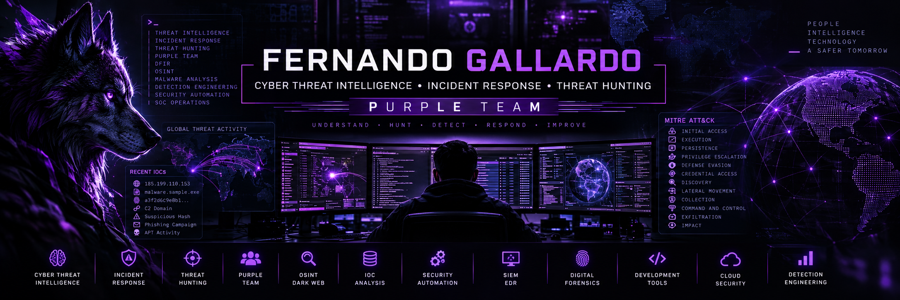

### 🟣 Cyber Threat Intelligence • Incident Response • Threat Hunting • Purple Team
**Cybersecurity Engineer | CTI & Incident Response Manager**
Cybersecurity professional focused on Cyber Threat Intelligence, Incident Response,
Threat Hunting and Purple Team operations, combining defensive security,
adversary analysis and automation to improve detection and response capabilities.


---
## 🟣 About Me
```text
[+] Cyber Threat Intelligence
[+] Incident Response
[+] Threat Hunting
[+] Purple Team Operations
[+] Digital Forensics & DFIR
[+] IOC Analysis & Enrichment
[+] Threat Actor / Campaign Analysis
[+] SIEM & Security Monitoring
[+] Security Automation
[+] OSINT / Deep & Dark Web Intelligence
```
I currently focus my work on the convergence of **Cyber Threat Intelligence and Incident Response**, transforming threat intelligence into actionable detection, hunting and response capabilities.
My approach follows a **Purple Team mindset**, connecting intelligence, defensive operations and adversary behavior to continuously improve organizational security.
---
# 🟣 Purple Team Operations
| 🔴 Adversary Knowledge | 🟣 Purple Team | 🔵 Defensive Operations |
|:---:|:---:|:---:|
| TTP Analysis | MITRE ATT&CK Mapping | Detection Engineering |
| Threat Actors | Threat Hunting | SIEM Monitoring |
| Malware / Ransomware | Attack Simulation | Incident Response |
| OSINT | Detection Validation | DFIR |
| IOC Analysis | Security Automation | EDR / XDR |
### Purple Team Philosophy
```text
🔴 ATTACKER KNOWLEDGE
│
▼
┌────────────────────┐
│ PURPLE TEAM │
│ │
│ Intelligence │
│ Hunting │
│ Detection │
│ Simulation │
│ Response │
└─────────┬──────────┘
│
▼
🔵 DEFENSIVE SECURITY
```
> **Understand the adversary. Hunt the behavior. Improve detection. Accelerate response.**
---
# 🧠 Cyber Threat Intelligence
My CTI activities focus on transforming external and internal intelligence into information that can be consumed by SOC, Threat Hunting and Incident Response teams.
### Intelligence Capabilities


```text
Collection
↓
Processing
↓
Enrichment
↓
Analysis
↓
MITRE ATT&CK Mapping
↓
Threat Hunting
↓
Detection
↓
Incident Response
```
---
# 🚨 Incident Response & DFIR
Areas of experience:
- 🚨 Incident triage and coordination
- 🔍 Root Cause Analysis
- 💾 Digital Forensics
- 🦠 Ransomware investigations
- 🌐 Network traffic analysis
- 📜 Log analysis
- 🔎 IOC identification
- 🧩 Timeline reconstruction
- 🧠 Threat actor TTP analysis
- 🛡️ Containment and remediation
- 📚 Lessons Learned
### Incident Response Lifecycle
```text
PREPARATION
↓
DETECTION & ANALYSIS
↓
CONTAINMENT
↓
ERADICATION
↓
RECOVERY
↓
LESSONS LEARNED
↓
DETECTION IMPROVEMENT
```
---
# 🎯 Threat Hunting
Proactive threat hunting based on:


```text
Threat Intelligence
│
▼
Hunting Hypothesis
│
▼
Telemetry Analysis
│
▼
Behavior / TTP Detection
│
▼
Investigation
│
├──► Incident Response
│
└──► Detection Improvement
```
---
# 🛡️ Security Operations Stack
### SIEM / Detection


### Threat Intelligence & Incident Response


### Network Security


### Automation & Infrastructure


---
# ⚙️ Security Engineering
### Languages

### Infrastructure & Development

### Additional Development Background

Software development remains an important part of my cybersecurity profile, particularly for building **security automation, IOC processing, APIs, integrations and internal security tools**.
---
# 🔬 Current Security Projects
## 🧠 IOC Intelligence Platform
Platform focused on centralizing and operationalizing Indicators of Compromise.
```text
Threat Feeds / Reports
│
▼
IOC Collection
│
▼
PostgreSQL
│
▼
IOC Enrichment
│
├── VirusTotal
├── Reputation
├── ASN
└── Geolocation
│
▼
FastAPI
│
▼
CTI Dashboard
│
├── Threat Hunting
├── SOC
└── Incident Response
```
**Technologies**


---
## 🐝 Incident Response & CTI Automation
Security orchestration environment based on:
```text
CTI
│
▼
┌─────────┐
│ TheHive │
└────┬────┘
│
▼
┌────────┐
│ Cortex │
└────┬───┘
│
┌───────┼────────┐
▼ ▼ ▼
VirusTotal IOC Automated
Analysis Enrichment Response
```
---
# 📜 Certifications & Professional Development

- 🛡️ **CEHP — Certified Ethical Hacking Professional**
- ⚔️ **EHPC — Ethical Hacking Professional Certificate**
- 🔐 **CAPC — Cybersecurity Awareness Professional Certificate**
- 🎓 **Computer Systems Engineering**
- 🔒 **Cybersecurity Specialization**
Current professional development areas:
`CTI` • `DFIR` • `Threat Hunting` • `Purple Team` • `CSIRT` • `MITRE ATT&CK`
---
# 📊 GitHub Activity
---
## 🟣 Think Purple.
### Intelligence → Hunting → Detection → Response
**Know the adversary • Hunt the behavior • Detect the attack • Respond faster**